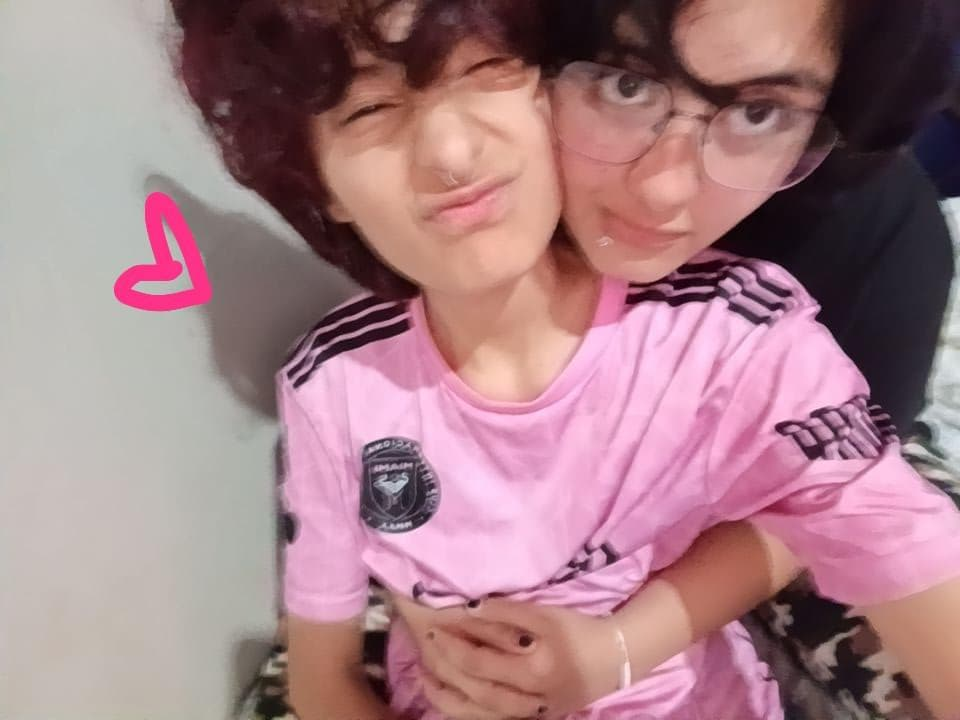
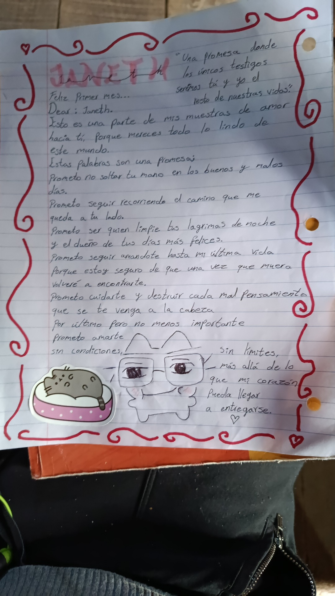
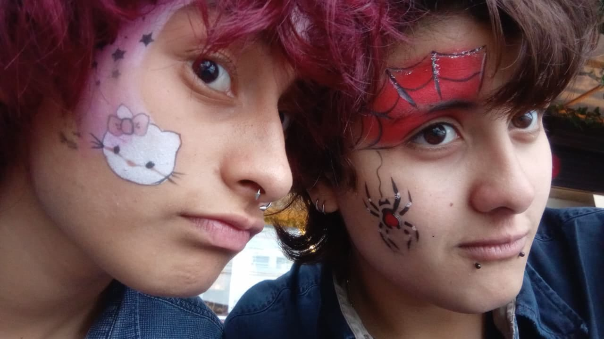
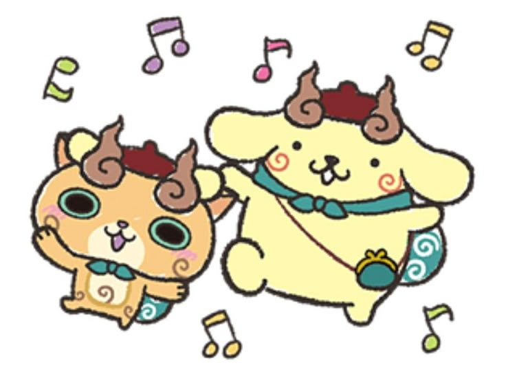

Cada momento contigo tiene un lugar especial en mi corazón.
Aquí quiero guardar algunos de nuestros capítulos.
Un comienzo
5/22/2026 ♡

No tengo palabras para describir lo que sentí en el momento de esa confesión, aquel 22 de mayo. Sé que no fue como lo hubieras deseado, pero fue la mejor confesión que pude tener. Podría decir que fue la primera oficialmente, sin que me pusiera los ojos en blanco o que todo quedara en una pantalla.
Sé que tuve mis dudas antes de decir que sí, pero ese «seamos un desastre juntos» fue la mejor frase que pude decir. ❤️
Te amo. 💗
01 · Primer Mes
6/23/2026 ♡

Un día para recordar
A ver, aclaremos algo: ¿puedo decir que nuestro primer aniversario fue lo mejor? Porque, para mí, sí lo fue. Nos mandamos videos de las oruguitas porque pensamos igual, jijiji, y pasamos un buen rato juntos hablando del pasado y a la vez poniéndonos al día.
Pero también recordando tu frase: «Creo que este era nuestro momento de estar juntos», frase que antes cuestionaba mucho de ti, pero ahora le encuentro mucho sentido después de pasar el tiempo. Y cómo olvidar lo más importante de ese mes: aunque no fue en nuestro aniversario, siempre recordaré ese ramo de Wattwels de aquel 6 de junio. 🌷💐❤️
02 · Segundo Mes
7/23/2026 ♡

Nuestra historia tiene puntos, pero siempre seguirá
A ver, sé que en nuestro segundo mes la cagué, y en grande, cambiando tus planes. Es algo que ya aprendí que no debo hacer, lo sé. Pero también sé que aprendí algo ese día: no llevar a la chamaca en días importantes o, mejor dicho, no mezclar mis amistades con mi relación. Una moraleja que me va a quedar para siempre.
Sé que no pude darte mucho ese día, pero me dejó una lección y me hizo darme cuenta de algo: que, aunque tenga dudas y preocupaciones muy seguido, tú vas a seguir tomándome de la mano. Y lo más bonito es que, incluso cuando te cansas, no me la sueltas. 🥹❤️
Por eso te lo agradezco muchísimo. Gracias por seguir conmigo, por tenerme paciencia y por esperar a que cambie por decisión propia, a que aprenda de mis errores y me convierta en alguien mejor cada día. No quiero cambiar solamente por ti, sino también por mí y por lo nuestro.
Pero hay algo de lo que sí estoy segura, y es que te amo hoy, mañana y siempre. 💗🫂
03 · Tercer Mes
8/23/2026 ♡


Un día sin caduccion
Sé que ese aniversario se festejó más el 15 de agosto, con las pintacaritas, el festival, los brazaletes, buscando el regalo de Ma que al final no le gustó JAJAJA, y ese juego de pool. 😭💗
Pero me alegro mucho de haber vivido ese día y también el de nuestro aniversario, cuando te dibujé el rostro y tú me hiciste una carta que se rompió. :( Aunque sea un poquis, JAJAJA. En serio, no sé cómo terminó ahí, amol. 😭💗
Pero ese día fue genial porque lo viví contigo, y eso es lo que más importa para mí. 🐻❄️💗
04 · Cuarto Mes
9/23/2026 ♡


No dudaré si me amas.
Sé que dudo mucho, pero es más por lo que me pasó. Aun así, gracias a ti, sé que mis manchas pueden ser tapadas por otras manchas coloridas. 🎨❤️🩹
Sé que he estado y estoy bajo presión, que a veces dudo de si yo misma soy lo suficiente para ti. Como aquella vez que me enfermé y solo pude darte un dibujo y una colonia, mientras tú me diste una caja con un montón de cosas y un una hoja de 1000 razones cual por eso le dijiste adíos tu muñeca para amarte, que seguro tengo que terminar hoy....
Pero, como tú dijiste, no se trata de merecer, de alcanzar o de quién tiene el mejor regalo. Gracias a Dios, porque si se tratara de eso, tú ganarías siempre. JAJAJA. 🧸💗
Se trata de recordarnos cuánto nos amamos cada mes, cada semana, cada día, cada minuto, cada segundo o, mejor dicho, cada vez que late mi corazón, porque quiero que cada palpitar sea tuyo. ❤️🩹💗
05 · Quinto Mes
10/23/2026 ♡

Cinco meses y lo que aún falta por escribir 💌
Y bien, ya estamos aquí, terminando nuestra primera página, porque nuestra historia nunca va a terminar. 💗📖
Sé que ya no he sido la misma que al principio, pero tú dijiste que ambos vamos a cambiar, y eso es algo bueno. Sé que me siento abrumada, pero es que, como te dije aquella noche, no quiero que caigamos en una rutina. Y para evitarlo, tengo que ponerme en acción por nuestro propio bien, porque quiero que sigamos creando recuerdos, viviendo nuevas experiencias y enamorándonos el uno del otro una y otra vez...pero con nuestro propio ritmo lose
por que ese "ya no estas sola" me hizo poder descanzar de mi carga y te lo agradezco, ¿y qué más? bueno algo que quiero decir. Sé que lo de mudarte conmigo puede ser impactante, o quizá ni siquiera sea algo que desees por ahora, y está bien. No quiero que sientas presión, porque sé que todavía tenemos mucho por vivir y construir juntos.
Pero quiero que sepas algo: hoy, mañana y siempre estaré contigo, abrazándote, amándote y recordándote que, sin importar cuántas páginas nos falten por escribir, quiero seguir escribiéndolas a tu lado. Porque esto no es un final, amol, sino el comienzo de todo lo que todavía nos queda por vivir. ❤️🩹💗🐻❄️